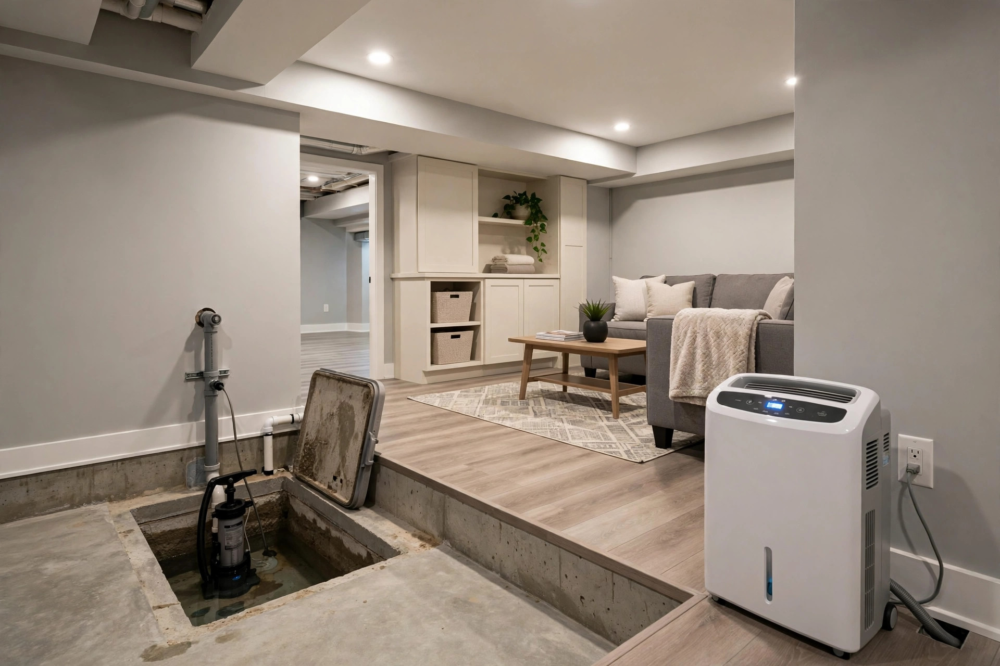

Basement Mold Removal in Eagle, ID
Eagle's finished basements are showpieces — home theaters, guest suites, wine rooms. They're also where mold hides longest: below grade, behind drywall, under carpet. We find it, remove it, and fix what let it in.
Keeping it from coming back
- Test your sump pump twice a year — pour water in the pit and confirm it activates and drains.
- Keep basement humidity below 50% with a dedicated dehumidifier, drained to the sump or a floor drain.
- Grade soil away from the foundation so surface water runs off instead of pooling against walls.
- Never install vapor barriers on the interior side of below-grade walls without professional guidance — trapped moisture is worse than none.
Eagle basement types we see
Not all basements are built the same, and the construction type shapes the mold risk.
Walkout basements
Common on Eagle's sloped lots. The exposed wall behaves like an above-grade wall — but the buried walls still wick groundwater. Best of both worlds until the buried side gets ignored.
Fully below-grade
Maximum soil contact on all sides. These need the most vigilant moisture management — interior drainage, working sump, and dehumidification aren't optional.
Typical cost ranges
Every basement is different, but these ranges reflect what Eagle homeowners commonly see. Exact pricing follows an on-site assessment.
| Scope | What it covers | Typical range |
|---|---|---|
| Localized treatment | Single wall section, surface mold, moisture source fixed | $800 – $1,800 |
| Partial basement | Multiple walls, drywall removal, drying, antimicrobial treatment | $2,500 – $6,000 |
| Full basement remediation | Extensive growth, containment, full drywall replacement, rebuild | $7,000 – $15,000+ |
Ranges are illustrative. Call (321) 985-3339 for an assessment of your specific situation.
A couple in Two Rivers converts their basement into a guest suite. Six months later, guests mention a musty smell. Behind the new drywall, the original foundation wall shows mold across a ten-foot section — groundwater wicking through during spring runoff, trapped by the vapor barrier installed backwards. The fix involves removing the new drywall, treating the foundation, correcting the drainage, and rebuilding with proper moisture management.

Why basements grow mold first
Concrete is porous. Soil holds moisture against foundation walls year-round. And finished basements hide every warning sign behind drywall and trim.
Hydrostatic pressure
Groundwater pushes against foundation walls and floors. In Eagle's riverside areas near Two Rivers, the water table runs high — moisture wicks through concrete even with no visible leak, feeding mold on the back side of finished walls.
Sump pump failures
Many Eagle crawlspaces and basements rely on sump pumps. When a pump dies during spring runoff or a power outage, water rises silently. The mold that follows often isn't discovered until the musty smell reaches upstairs months later.
Finished walls trap everything
Drywall against foundation walls creates a perfect mold sandwich: damp concrete on one side, paper-faced gypsum on the other, zero airflow between. Luxury basement finishes make this worse by hiding the problem longer.
Straight answers
How do I know if there's mold behind my basement walls?
Musty odors, unexplained allergy symptoms that worsen downstairs, and baseboards that feel damp are the classic trio. A moisture meter reading through the drywall confirms dampness; if readings stay elevated, there's likely growth behind it. Call (321) 985-3339 and we'll check.
Can I just paint over basement mold with waterproof paint?
No. Paint seals moisture inside the wall, and mold keeps growing underneath. The EPA is clear on this: mold must be physically removed, and the moisture source fixed. Paint is a cosmetic cover, not a solution.
How long does basement mold removal take?
A single wall section: one to two days. A partial basement with drywall removal and drying: three to five days. Full-basement jobs with rebuild: one to three weeks depending on the finish level.
Will removing basement mold damage my finished walls?
Affected drywall has to come out — there's no way to clean mold from inside gypsum. But removal is surgical: we cut along clean lines, and the rebuild blends with your existing finishes. The goal is invisible repair.
Is basement mold dangerous?
The CDC notes that mold exposure can trigger allergic reactions and respiratory irritation, especially in sensitive individuals. Basements concentrate the problem because they're enclosed with limited ventilation. It's worth taking seriously, not panicking over.
Basement smelling musty?
One call. Describe what you're noticing downstairs and we'll tell you honestly what the next step should be.